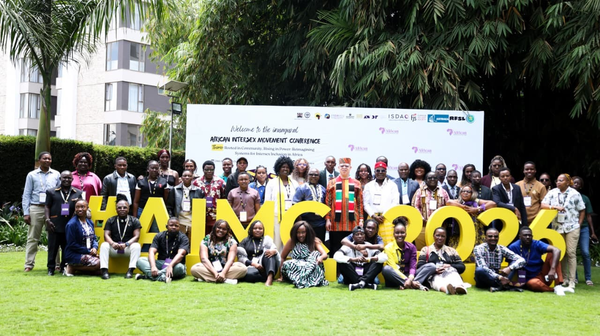
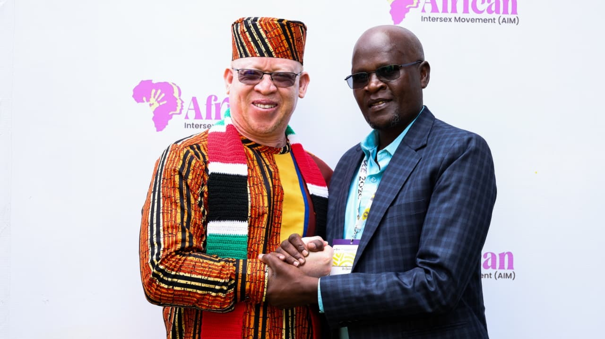
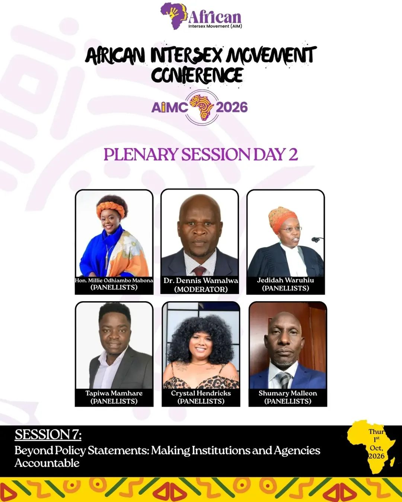
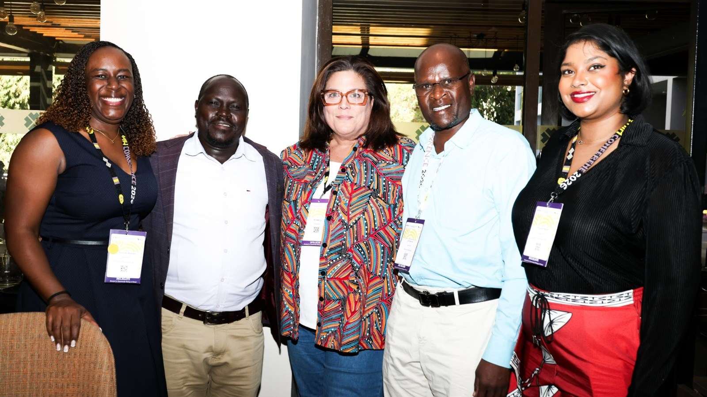

Advancing Intersex Rights in Africa: Reflections from the Inaugural African Intersex Conference 2026

The Inaugural African Alliance Intersex Conference 2026 marked a historic milestone in the journey toward equality, dignity, and recognition for intersex persons across Africa and the world. Bringing together intersex advocates, human rights defenders, policymakers, researchers, development partners, and representatives of National Human Rights Institutions from various countries, the conference provided a powerful platform to reflect on progress made, share experiences, and chart a collective path forward.
As both a Commissioner of the Kenya National Commission on Human Rights (KNCHR) and an intersex person, I was honoured to participate in this landmark gathering. The conference reaffirmed a reality that many intersex persons continue to experience daily: despite constitutional guarantees of equality and non-discrimination, harmful practices, stigma, discrimination, and inadequate legal protections remain significant barriers to the full enjoyment of human rights.

The human rights reality of intersex persons
Across the world, intersex persons continue to face unique challenges that often begin at birth and extend throughout their lives. These include non-consensual and medically unnecessary surgeries on children, limited access to specialised healthcare services, discrimination in educational institutions, barriers in accessing sanitation facilities, exclusion from social protection programmes, and widespread stigma within communities.
Particularly concerning is the limited availability of affordable and responsive healthcare services, including hormonal therapy and psychosocial support. Many healthcare systems have yet to adequately respond to the specific needs of intersex persons, leaving many individuals and families without the support they require. These challenges underscore the urgent need for comprehensive legal, policy, and institutional reforms that place human dignity at the centre of decision-making.
Kenya's journey toward recognition and inclusion
Kenya's experience demonstrates that progress is possible when governments, human rights institutions, civil society organisations, and affected communities work together. Over the years, significant strides have been made in advancing the rights and recognition of intersex persons.
A major milestone was the inclusion of intersex persons in the 2019 Kenya Population and Housing Census, which provided important data for planning and policy development. This represented a significant step toward visibility and acknowledgment of a community that had historically remained largely invisible in official records.
Further progress has been witnessed through reforms aimed at improving civil registration and legal recognition for intersex persons. These developments have strengthened efforts to ensure that intersex children and adults are recognised, documented, and protected under the law. Kenya has increasingly emerged as a regional leader in promoting the rights and dignity of intersex persons.
Today, the ongoing discussions surrounding the Intersex Persons Bill represent another critical step toward establishing a comprehensive legal framework that addresses the unique needs and challenges faced by intersex persons in Kenya. The proposed reforms seek to enhance protection, recognition, access to services, and participation in public life.

The need for stronger legal and policy frameworks
During the conference, participants emphasised that the absence of adequate legal frameworks continues to perpetuate violations against intersex persons. Strong laws and policies are not merely administrative instruments; they are safeguards that protect human dignity, promote equality, and hold institutions accountable.
The discussions echoed a common aspiration shared by intersex communities across Africa: the creation of societies where diversity is embraced, differences are respected, and every individual can enjoy their rights without fear of discrimination or exclusion.
The participation of leaders from government, human rights institutions, and civil society demonstrated a growing recognition that inclusivity is not optional — it is a fundamental requirement for democratic and rights-respecting societies.

A call to action
The Inaugural African Alliance Intersex Conference 2026 was more than a conference; it was a call to action.
Governments must strengthen legal protections and policies that safeguard intersex persons from discrimination and harmful practices. Healthcare systems must become more responsive to the unique needs of intersex persons. Educational institutions must foster safe and inclusive learning environments. Communities must reject stigma and embrace diversity. Development partners and human rights organisations must continue supporting initiatives that promote awareness, empowerment, and social inclusion.
Most importantly, intersex persons must remain at the centre of all conversations and decisions that affect their lives.
Looking ahead
The progress achieved thus far demonstrates what is possible when courage, advocacy, and collaboration come together. Yet much work remains to be done.
As we move forward, we must continue building bridges between governments, human rights institutions, civil society organisations, healthcare providers, and communities. Together, we can create a future where every intersex person enjoys equal protection under the law, equal access to opportunities, and equal respect for their inherent dignity.
The struggle for intersex rights is fundamentally a struggle for human rights. It is a struggle for recognition, inclusion, justice, and equality. And it is a struggle that we must continue until every intersex person can live freely, safely, and with dignity.
Intersex Rights are Human Rights.